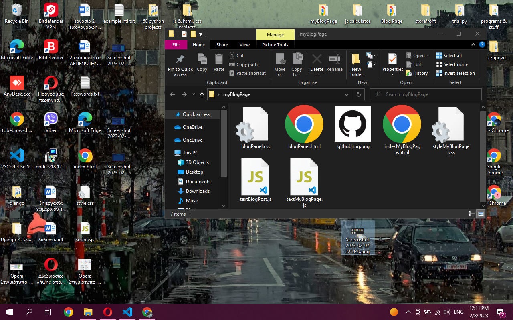

Still under construction
In this very image, we see a destop interface. The first thing that takes are attention is the open folder in the middle of the screen, Inside we see a few files, html, css js and a github image, probaly reffering to the files of a website, probaly still under construction.
Date: 02-08-2023